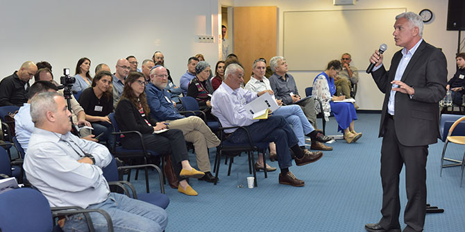

On April 18 2017, the Mandel Graduate Unit hosted a meeting with Mordechay Cohen, the director general of the Ministry of the Interior and a graduate of Cohort 8 of the Mandel School for Educational Leadership, as part of a series called "Encounters with policy-makers and opinion leaders.” At the start of the evening, Professor David Dery, director of the Mandel Center for Leadership in the North, interviewed Mordechay Cohen, who presented his ideas and professional vision regarding the role of local government in the Israeli government system, described the main issues currently facing him as director general of the ministry, and shared thoughts about future directions of activity.
There was then an open discussion with graduates who hold positions in local authorities, which was moderated by Sharona Bar-Nes, a graduate of Cohort 16 who headed the education administration of the Mateh Yehuda regional council until recently. The discussion focused on interactions between central government, local authorities, and municipal education departments. Participants shared their experiences of the challenges that typify these interfaces, as well as other experiences from their professional lives, such as forging partnerships, leading change via regional collaboration, developing long-term plans, and having a vision for the future.
Afterwards, a number of Mandel fellows and graduates presented “Issues from the Field,” focusing on specific topics and initiatives they are seeking to advance for the betterment of Israeli society and education. The evening concluded with small roundtable conversations and dinner, with a theme drawn from the Moroccan Jewish community’s Mimouna celebrations, which follow the Passover holiday and had taken place that the same day.

The event, which was organized as a collaborative effort between the Mandel Graduate Unit and the Mandel School for Educational Leadership, was an opportunity for fellows and graduates of Mandel programs to present their professional ideas, challenges, and initiatives, and to take an active role in public discourse.
- Vered Amar – Director of the Education and Community Division of the Kfar Vradim Local Council (Cohort 19)
- Michael Biton – Mayor of Yeruham (Cohort 18)
- Eran Doron – Mayor of the Ramat Negev Regional Council (Cohort 14)
- Dr. Heftzi Zohar – Deputy Mayor of Beer Sheva, who holds the Education and Welfare portfolios (Cohort 19)
- Batia Shochen Orbuch – Director of the Education Department of the Modi'in-Maccabim-Reut Municipality (Cohort 16)
- Yoav Schurr – Director of the Education Department of the Mevaseret Zion Local Council (Cohort 13)
- Shimrit Barda (fellow, Cohort 24): “Local authorities creating opportunity and leading improvement in their residents’ quality of life.”
- Dr. Ronen Goffer (graduate of Cohort 3; director of “DEMOS”): “Participatory budgeting: A tool for improvement and oversight in local authorities.”
- Dr. Reut Gordon (graduate of Cohort 5; head of implementation of the “Israeli Hope” program for integrating minority populations into academia, and director of the MA program in education for Haredi teachers at the Kibbutzim College of Education): “Should we abandon the school model that was designed during the industrial revolution?”
- Nadav Greenberg (fellow, Cohort 24): “Local authorities at the service of parents.”
{kind=link}